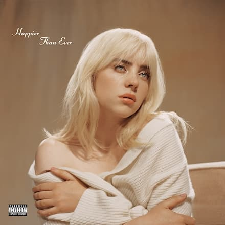
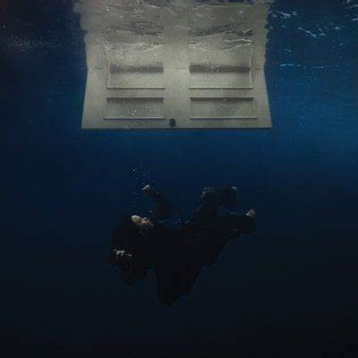

Billie Eilish Pirate Baird O'Connell, mais conhecida como Billie Eilish nasceu em Los Angeles e atualmente possui 23 anos. Ela é uma cantora e compositora estadunidense.
- Início da carreira -
Ela se popularizou no ano de 2016 quando lançou o single ''Ocean Eyes":
Seu primeiro álbum lançado, When We All Fall Asleep, Where Do We Go?, em março de 2019, foi eleito um dos melhores discos do ano.
ALBUNS
When We All Fall Asleep, Where Do We Go? — 29 de Março, 2019.

Happier Than Ever — 30 de Julho, 2021.

Hit Me Hard and Soft — 17 de Maio, 2024.
- PREMIAÇÕES -
GRAMMYS:
Billie venceu cinco Grammys, entre eles nas categorias mais importantes do evento (Álbum do Ano, Registro do Ano, Canção do Ano, Melhor Novo Artista).
OSCARS:
Durante a 96ª edição do Oscar, Billie ganhou o seu segundo prêmio "Melhor Música Original" com "What Was I Made For?"
Billie Eilish é uma das artistas mais premiadas de sua geração. Fora essas premiações citadas, ela também ganhou:
Multiplos premios no MTV Video Music Awards,
vários premios no American Music Awards,
ganhou o Artista do Ano da Apple Music (duas vezes) e
venceu 4 de 8 indicações ao iHeartradio Music Awards.
- CURIOSIDADE -
Billie Eilish recebeu a encomenda de fazer um single para o filme do James Bond (007: Sem tempo para morrer). A jovem compôs, ao lado do irmão, a música No time to die, que ficou no topo das paradas de sucesso, inclusive se apresentou no Oscar com essa música.
Uma música dela também foi trilha sonora de uma novela brasileira!(Mania de Você)